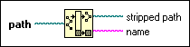

Strip Path Function
Owning Palette: File I/O VIs and Functions
Requires: Base Development System
Returns the name of the last component of a path and the stripped path that leads to that component.

 Add to the block diagram Add to the block diagram |
 Find on the palette Find on the palette |